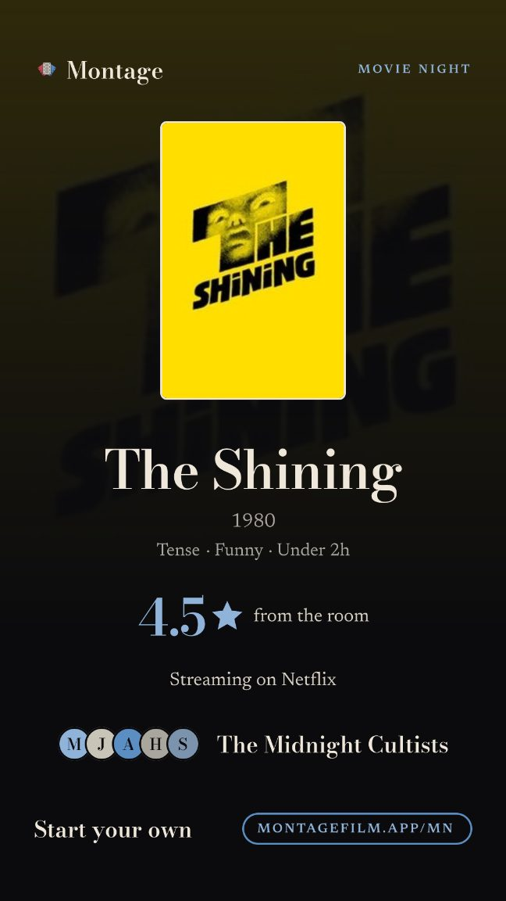
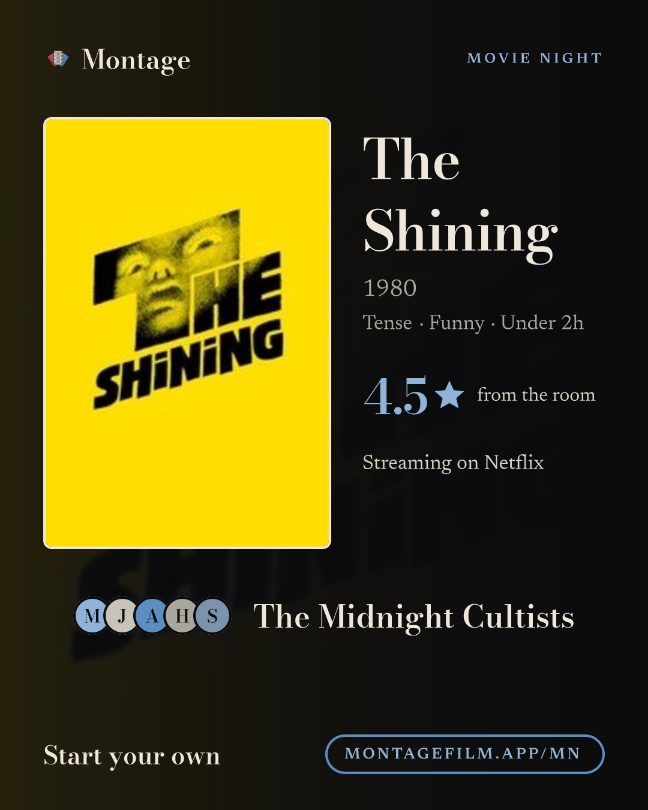

Share cards v1: one final pass
Owner: “Let's do one more pass over all the share cards. Some look really good, like this Movie Night one, and some of our other share cards don't look great. One final pass.” 17 cards and link previews (about 30 image variants) across web and iPhone, all drawn on the server by next/og (the iPhone never draws its own). Graded against the Movie Night card: 1 A, 8 B, 8 C, plus one dead card to delete. Every C and B is mocked in its system in pages b to e; page a shows every card as it renders today.
The benchmark and its rules


The Movie Night system
- One big poster in a cream frame, the film's own wash faint behind the top.
- Bodoni Moda for the title, the number and the foot line; Newsreader for the rest.
- A few facts (year, three moods, one number, where to watch). 30 words or fewer is the aim.
- People as initials in rounded squares, one centred group with their name.
- Generous spacing: 72 side margins, 48 to 80 between blocks.
- Foot: a Bodoni line on the left, the small caps link pill on the right. No QR, no room ids.
- Cream on ink, blue for the one number and the pill. Red only inside the mark.
- Never: spines, keylines, rules, ruled tables, caps paragraphs, em dashes, “taste match”, “Start a Blend”. Ratings read 4.5★.
Broken today (found by rendering main)
- Reveal card clips the name. 13 to 15 letters are set at 172px on a 920px column: “Tenderhearted” loses its T and d (lib/pick-card.tsx archetypeStoryCardBody nameSize).
- Pitch card foot runs together: “PITCH IT FOR YOUMONTAGEFILM.APP/RECUT/K3X9A2” (lib/recut-card.tsx, two caps runs in a space-between row too narrow for both).
- Group recap stars are text: ★ and ½ are not in Newsreader or Bodoni, so satori fetches a fallback font (or draws boxes when it cannot). Same for the Canon's “★ CANON” and the ↑ on Pitch chips.
- Year in review brings back the red offset shadow (12px oxblood under the hero poster) and a 20px oxblood spine, after CARD_V 16 removed both from every other card on 2026-11-04. It opens Dec 1.
- Movie Night draws circles, the one place it is off the rounded-square rule the other cards will follow.
- Dead code: pickCard / pickCardBody in lib/pick-card.tsx has no caller since the ticket; still exported with the oxblood spine.
- Previews in the wrong shape: /recut/<id> uses its 9:16 card as og:image and /u/<id>/match its 4:5 (chat apps crop to the middle band). /mn has no preview of its own and unfurls as the site card.
Every card, its grade, the change, in fix order
| # | Card | Grade | Formats · when it is used | What is off today | Change | Words | Page |
|---|
Why this order: the profile card, the Blend card and the reveal are the identity shares people post, and two of them are C; the reveal has a visible bug. The movie night invite is the highest-intent link in a group chat. The year in review ships Dec 1. The Pitch foot is broken. Group cards are image-only and seen by fewer people. B link previews are close already; the Movie Night card changes only its initials.